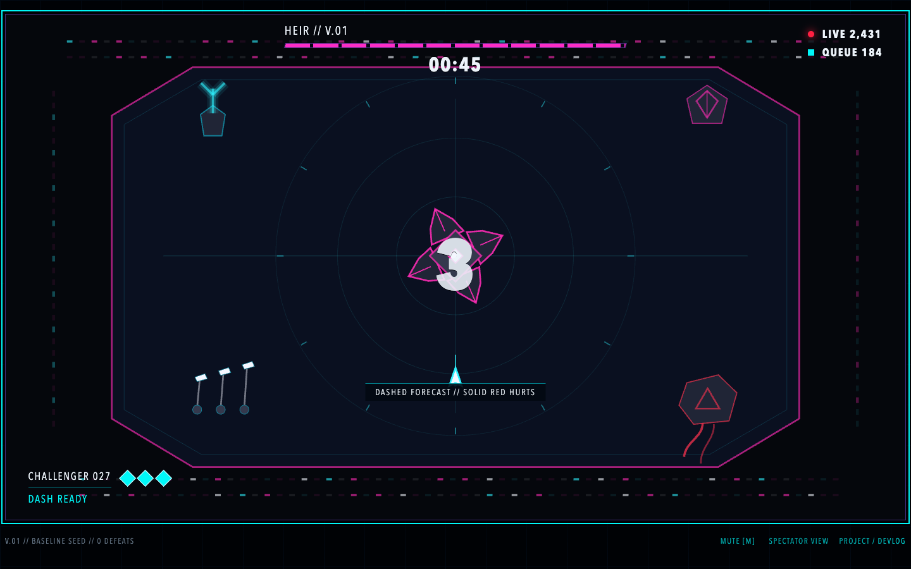

The action
Dodge the forecast. Cross the line. Punish the core.
Every attack declares itself before it hurts. Dashed magenta forecasts become solid red danger; the exposed white core marks the brief answer. Cyan belongs to the challenger.
Public development record
Enter a live arena. Read the machine. Spend one dash at the right moment. Leave behind the last human victory HEIR could not prevent.
Rendered checkpoint

The action
Every attack declares itself before it hurts. Dashed magenta forecasts become solid red danger; the exposed white core marks the brief answer. Cyan belongs to the challenger.
The inheritance
Defeat the baseline and HEIR returns as V.37 with DASH CATCH: a visible strike committed to the predicted dash endpoint. It predicts. It never retargets.
SIMULATION BOUNDARY // READ BEFORE ENTRY
Version 0.1.1 is a local vertical slice. Its audience, queue, challenger identities, victory record, and between-round evolution are deterministic presentation. There is no live multiplayer, persisted history, account system, trained model, or frame-by-frame AI control in this checkpoint.
Director’s devlog
Removed browser audio from the critical path to combat. The entry gesture still requests the synth, but missing, rejected, or permanently suspended audio now yields immediate silent play instead of a trapped champion.
Preserved the verified playable slice, approved concept screens, and rendered QA evidence as the baseline for every future decision. Tests pass, the production build compiles, and the complete V.01 → V.37 → LAST CONQUEROR flow has been played in Chromium.
The fixed-camera boss duel became playable: readable forecast-to-danger attacks, a responsive dash, opening-gated shots, an authored inherited response, immediate retry, procedural synth impact, and a concise champion payoff.
The next checkpoint begins with a fresh playthrough. Only the highest-leverage player-visible weakness earns work; depth, weight, readability, and control feel take priority over more modes, bosses, or progression.